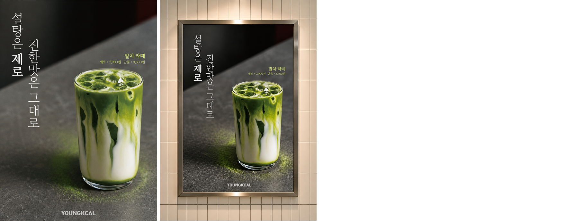
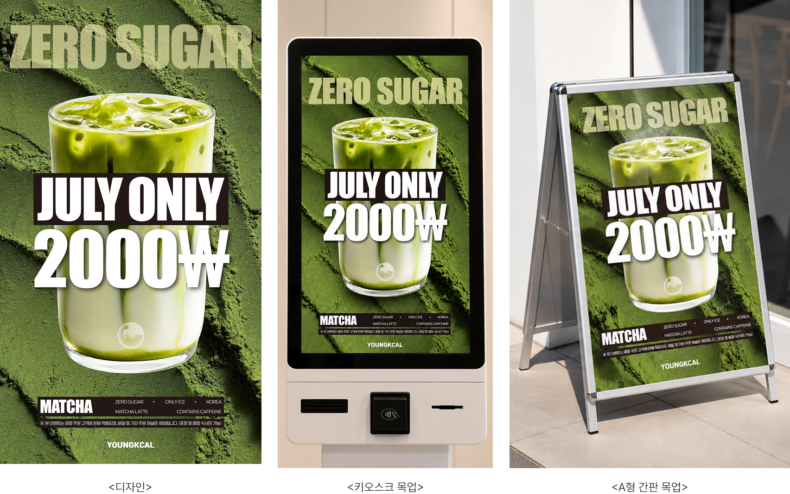

설탕은 제로, 진한맛은 그대로
저당 말차 라떼
Design concept
매장용 포스터는 어두운 공간과 부드러운 빛을 활용해
차분하고 프리미엄한 분위기를 연출했습니다.
“설탕은 제로, 진한 맛은 그대로”라는 카피를 세로로 배치해 제품의
핵심 특징을 간결하게 전달했습니다.
할인 포스터는 말차 가루의 거친 질감과 강한 타이포그래피를 활용해
젊고 대담한 이미지를 강조했습니다.
‘ZERO SUGAR’와 프로모션 가격을 크게 배치해 제품의 특징과 혜택을
빠르게 인식할 수 있도록 구성했습니다.
Process
실제 제품 촬영 없이 말차의 진한 색감과 우유가 자연스럽게 섞이는
질감을 AI로 제작했습니다.
이후 포스터 콘셉트에 맞는 배경과 합성하여 완성했습니다.

Design concept
키오스크와 A형 간판에서 고객의 시선을 빠르게 끌 수 있도록 말차
파우더의 질감을 배경 전체에 활용하고, 제품을 중앙에 크게 배치해
이미지를 강조했습니다.
상단의 ‘ZERO SUGAR’로
제품의 특징을 직관적으로 전달하였습니다.
‘JULY ONLY’는 두 단어의 유사한 어감과 리듬감을 활용한 카피로
7월 한정 프로모션을 기억하기 쉽게 표현했습니다.
